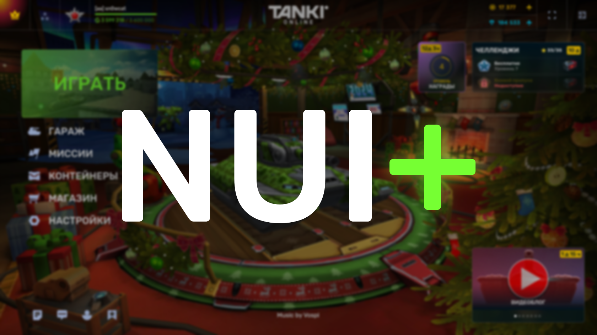
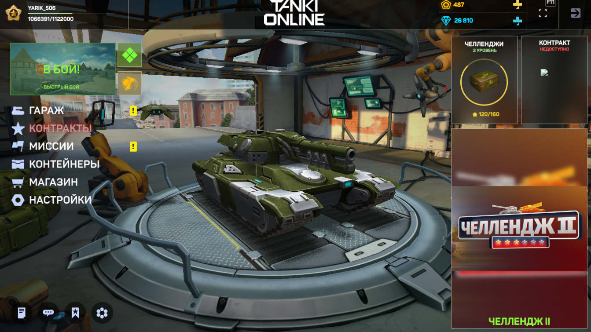
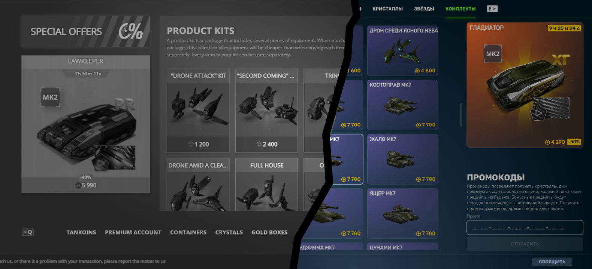
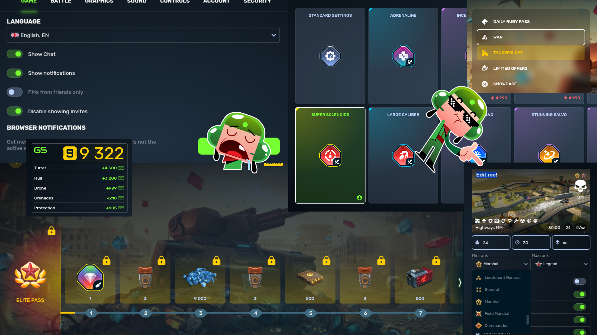

NUI+
Powerful Tanki Online interface enhancment
It so happens that some decisions remain unsuccessful, poorly implemented, unrealized at all, and sometimes not even conceived. This can be said about a lot of things, including the "blue" interface of Tanki Online, which went into the release on February 18, 2022. As long sn0wcat had skills in editing web interfaces, it was decided to take up the correction and improvement of the capabilities of the game.
Initially, NUI+ was conceived as a joke or Tanki Online simulator with a new interface. Then it was also called Tonui, but for simplicity from the name the name of the game was removed. The development of the then development was a impulse of adventurism and did not represent anything serious, although this parody intrigued some people.

Soon the project was reformatted from .html pages into a solid file, in which an unprepared person would break his head because of the volume of CSS. The transformation of the game into a new look, which it had yet to see, began. There was a desire to overtake the developers themselves, since they were known among players for not rushing with updates. And at that time, it really looked like what actually came out.

The official release of the blue interface did not put an end to the project. It was reformatted once again, preserving the main idea to which it always adhered ─ to comprehend the maximum similarity with the intended concept of the new interface. Then it was decided to focus on what had not yet been changed and improve its appearance, as well as to finalize what was not fully implemented and, in addition to everything, to imagine what else could fit into this picture.

By collecting data from various sources, first from video blogs and then from official design guidelines from its creators themselves, it all resulted in this amazing project, which began on July 15, 2021.
Supported feature list
- Forced correction of visual inaccuracies of this design (border radius, margings, legacy modules)
- Use of game mascot where possible
- Automatic sorting of augments in the garage1
- New design of Settings tab
- New design of Friends tab1
- New design of Clans tab
- Hotkey display change (default: light theme; dark theme; hidden)
- Some visual improvements of the mission system (incl. challenges)
- Some visual improvements of the in-game store
- Expanding the background image for elite pass
- Fix for the behavior of the bottom panel in the lobby and its elements
- Hover effect on active Legend rank in "Ranks" tab1
- Old order of lobby side menu elements
- Protection modules in garage in two rows (suggested by Borzz)1
- Forced display of the paint list in single row
- Enlarged "Play" button to fit the width of the lobby side menu
- Loading indicator transparency adjustment
- New background for the "Play" button
- Alternative discount icon in garage
- Alternative indication of a new item in the garage1
- Alternative battle end screen1
- Alternative challenge star icon
- Colored game mode cards in the lobby
- Experimental battle interface (not recommended)
- Splitting the battle result of two teams into two columns
- Experimental display of GS
- PRO-battle settings editor via active card (currently battle name only)
- New ratings.tankionline.com website
- Hide outdated achievements
- New tankianalytics.com website
How to install
1. Partially or completely requires support for the :has() selector in the browser